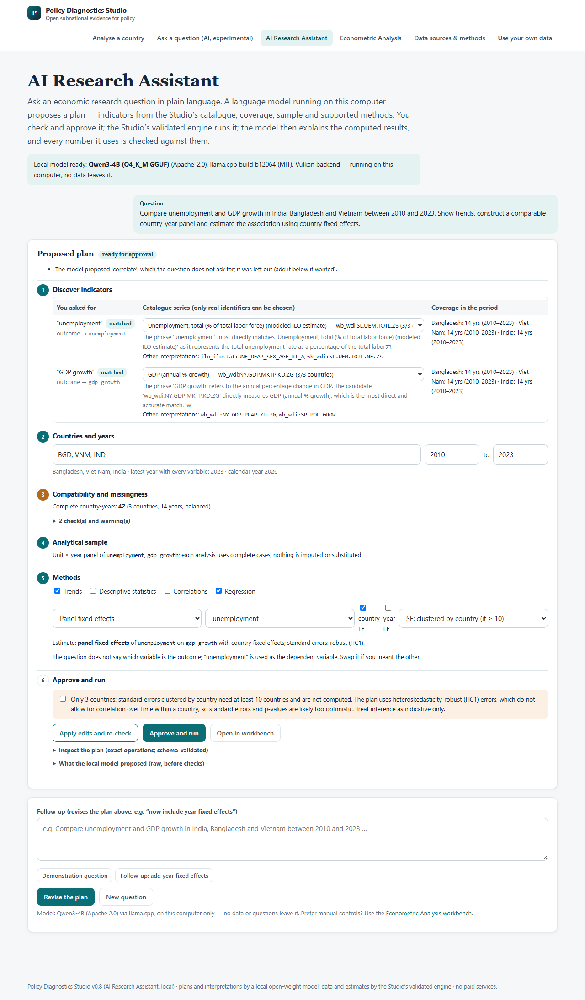
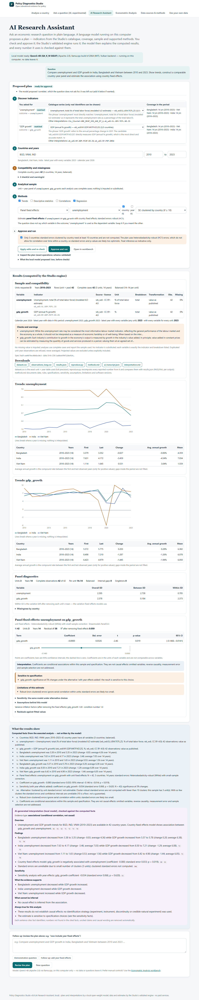

Local research tools
Two further parts of the Studio run only on a researcher’s own computer, because they query the full 10.5-million-observation data warehouse and, for the assistant, a locally installed language model. They are not available on this website. This page describes what they do; everything else on this site works in your browser.
Econometric Analysis workbench local only
Select countries, indicators and years from the warehouse (1,710 public country-level indicators, 217 economies); preview the sample and a compatibility report (units, breakdowns, missingness, latest common year); run descriptive statistics, trends, correlations, OLS or panel fixed effects with country and year effects; inspect coefficient tables, diagnostics and sensitivity checks; and download the analytical dataset, results, a reproduction script that recomputes every reported number, and a methods note.
- Inference: robust or country-clustered standard errors (clustered errors are not computed with fewer than 10 countries, and flagged as approximate below 50); estimators validated against NIST reference values and an independent implementation.
- Refusals: too few observations, unidentified or collinear specifications and unavailable methods (difference-in-differences, event studies, instrumental variables, spatial and survey-weighted models) are declined with the reason.
- Interpretation: regression results are reported as associations, never as causal effects; each estimate lists its assumptions and shows when results are sensitive to specification.
AI Research Assistant local only · experimental
Ask a research question in plain language. An open-weight language model running on the researcher’s computer (Qwen3-4B, Apache 2.0, via llama.cpp) proposes a plan using only real catalogue indicators and the supported methods; the researcher edits and approves it; the validated engine runs it; and the model explains the computed results. Every number in the explanation is checked against the computed facts, causal wording is removed, and the explanation is shown separately from the facts. Follow-up requests such as “now include year fixed effects” revise the plan on the same frozen sample.
No questions or data leave the researcher’s machine; no paid or cloud AI service is used. In testing on 15 questions it chose the expected indicators automatically in 8 of 11 cases and referred the rest to the user for confirmation rather than guessing.
Screenshots (local installation)




What works on this website
Analyse a country (regional poverty, observed spending versus need where data exist, hypothetical funding rules, health, education and climate exposure, with charts, maps, downloads and a printable policy note) · Data sources & methods · Ask a question (browser-based question classifier) · Use your own data (compatibility checker and allocation tool; files stay in your browser).